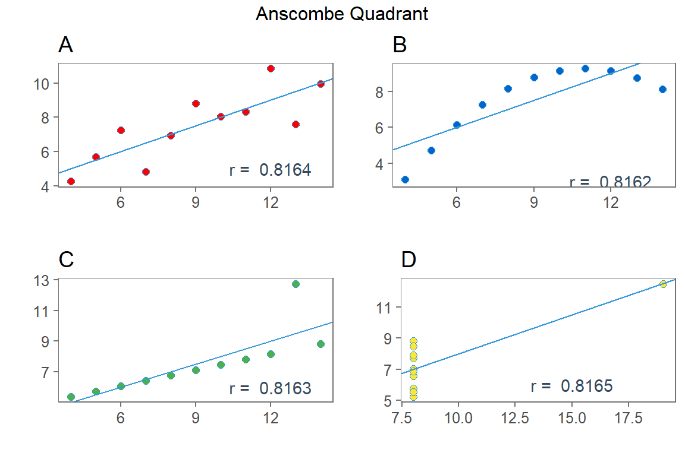

2 Grundlagen
Bevor man komplexere Methoden verstehen möchte, müssen die Basics sitzen! Komplexe Statistik ist die Summe aus vielen kleinen Konzepten.
2.1 Messnivaus
Aus Methodenlehre oder Fragebogenkonstruktion kennen wir vier Messniveaus:
- Nominal: ungeordnete Gruppenzugehörigkeit/ Kategorien
- Ordinal: geordnete Gruppenzugehörigkeit/ geordnete Gruppen
- Interval: metrisch skaliert mit \(\geq\) 5 Kategorien \(\approx\) Semi-Äquidistanz der Ausprägungen (Ein Anstieg um eine Einheit sollte von Gruppe zu Gruppe das “Gleiche” bedeuten).
- Ratio: metrisch skaliert mit einem natürlichen Null-Punkt.
Diese Messniveaus werden auch Skalierung genannt. In der Praxis sind lediglich zwei Skalen von Bedeutung: Nominal und Metrisch. Ordinale Variablen müssen für eine Regression genauso wie nominale Variablen in Dummies transformiert werden. Ein Dummy kann nur zwei Ausprägungen [0, 1] annehmen. Damit verliert man die Ordnungsstruktur von Ordinalen Variabel (ausführlich dazu in Kapitel ??).
Tipp: Wenn eine Grafik nicht funktioniert ist des Öfteren die Skalierung falsch.
In R sind drei Hauptdatentypen implementiert:
- Factor
: Unveränderliche Ausprägungen (z.B. Gender, Religion). - Character
: aka “String” oder ‘String’, veränderbarer Text. - Numeric
Des Weiteren existieren ebenfalls wichtige Datentypen, die für eine ausgewachsene Programmiersprache üblich sind.
- Boolean <>: [TRUE | FALSE], [T | F]
- NA: Missing Values
- NaN <>: 0/0 \(\rightarrow\) ‘Not a Number’
- Infinity <+/- Inf>: 1/0
Transformation zwischen den Datentypen. Aber welcher Datentyp liegt hier for?
class(dat$variable)
str(dat)
library(dplyr)
glimpse(dat)Es existiert eine “Hierarchie” innerhalb der Datentypen:
Factor \(\rightarrow\) Character \(\rightarrow\) Numeric
mit base lassen sich diese Typen einfach transformieren (casten):
as.factor()as.character()as.numeric()
num <- c(1,2,3)
char <- c("Hans", "Micha", "Torsten")
fac <- factor(c("Hans", "Micha", "Torsten"))
library(dplyr)
glimpse(num)## num [1:3] 1 2 3glimpse(char)## chr [1:3] "Hans" "Micha" "Torsten"glimpse(fac)## Factor w/ 3 levels "Hans","Micha",..: 1 2 3num1 <- as.numeric(as.character(fac))
num2 <- fac %>%
as.character() %>%
as.numeric()
class(num1)## [1] "numeric"class(num2)## [1] "numeric"Als nächstes werden die Grundlagen der Statistik besprochen auf denen alle weiteren Verfahren basieren. Es folgen univariate Lage und Streuungparameter sowie bivariate Korrelationsmaße.
2.2 Lageparameter
Um ganze Verteilungen (hunderter Beobachtungen) anhand eines Parameters zu beschreiben werden die Maße der zentralen Tendenz eingesetzt. Diese werden auch als Lageparameter oder deskriptive Verteilungsmomente bezeichnet.
Nehmen wir eine Variable metrischen Messniveaus mit folgenden Ausprägung an:
\[x = [0, 2, 4, 3, 1, 2] \]
2.2.1 Modus
Die Merkmalsausprägung, welche in einer Stichprobe x am häufigsten vorkommt heißt Modus. Damit ist ein Modus genau der Gipfel einer Häufigkeitsverteilung und wird mit dem Buchstaben D oder seltener \(\bar x_M\) definiert. Häufigkeitsverteilungen mit zwei oder mehr Modi werden als Multimodale Verteilungen bezeichnet.
Im obigen Beispiel liegt eine unimodale Verteilung mit dem Modus 2 vor, wobei der Modus keine arithmetischen Rechenoperationen zulässt und damit an Bedeutsamkeit einbüßt. Außerdem kann ein Modus in vielen Fällen entweder schwer identifiziert werden oder gar keine inhaltliche Aussage zulassen.
Links Modus Wikipedia
2.2.2 Median
Der Median \(\tilde x\) (gesprochen Tilde-x oder “Schlange-x”) einer Variablen ist der Wert, der an mittlerer (zentraler) Stelle steht, wenn man die Werte der Größe nach sortiert.
Regeln
- Wenn die Anzahl der Werte ungerade ist, ist die mittlere Zahl der Median.
- Wenn die Anzahl der Werte gerade ist, wird der Median meist als arithmetisches Mittel der beiden mittleren Zahlen definiert.
\[x_{\;\;\;\;} = [0, 2, 4, 3, 1, 2] \]
\(x_{\text{sort}} = [0,1,\) \(2,2\) \(,3,4]\)
\[\tilde x = 2 \]
R-Code
x <- c(0, 2, 4, 3, 1, 2)
median(x, na.rm = T)## [1] 2Der Median gehört zur Gruppe der Quantile und kann auch als \(\frac{1}{2}\)-Quantil betrachtet werden. Quantile sind Schwellenwerte einer Verteilung, die eine Variable in Anteile zerlegt. Das 25-%-Quantil beispielsweise ist der Schwellenwert, für den gilt, dass 25 % aller Werte kleiner sind als dieser Wert. Genauer gesagt unterteilen Quantile eine Verteilung in prozentuale Intervalle.
- Median: (Hälfte) entspricht dem Quantil \(Q_{0,5}\) (0,5-Quantil) bzw. dem 2. Quartil Q2 oder dem 50. Perzentil P50.
- Quartile: (Viertel) sind die Quantile \(Q_{0,25}\) (0,25-Quantil), \(Q_{0,50}\) (0,5-Quantil = Median) und \(Q_{0, 75}\) (0,75-Quantil), die auch als Q1 („unteres Quartil“), Q2 („mittleres Quartil“) und Q3 („oberes Quartil“) bezeichnet werden. Sie sind die in der Statistik mit am häufigsten verwendete Form der Quantile.
- Dezile: (Zehntel) zerlegen eine Variable in 10 gleich große Teile. Das Quantil \(Q_{0,3}\) (also das 0,3-Quantil) ist der Wert des Punktes einer Verteilung, unterhalb dessen sich 30 % aller Fälle der Verteilung befinden.
- Perzentile: (Prozent) unterteilt eine Variable in 1% Segmente.
R-Code
### default sind Quartile
quantile(x, na.rm = T)## 0% 25% 50% 75% 100%
## 0.00 1.25 2.00 2.75 4.00### Median und 2. Quartil sind identisch
median(x)## [1] 2quantile(x, prob = 0.5)## 50%
## 2### Dezile
quantile(x, prob = seq(0, 1, 0.1))## 0% 10% 20% 30% 40% 50% 60% 70% 80% 90% 100%
## 0.0 0.5 1.0 1.5 2.0 2.0 2.0 2.5 3.0 3.5 4.0### Percentile
library(dplyr) # für doe pip %>%
quantile(x, prob = seq(0, 1, 0.01), type = 5) %>% head()## 0% 1% 2% 3% 4% 5%
## 0 0 0 0 0 0Quartile werden meist mit einem Boxplot dargestellt. Dabei vereint ein Boxplot verschiedene robuste Streuungs- und Lagemaße in einer Darstellung, wodurch man schnell einen Eindruck über die Verteilung und Streuung einer Variablen bekommt.

Links
2.2.3 Mean
Wie lässt sich diese Variable am besten Beschreiben? Bzw. Was ist die beste Vorhersage von \(x\)? Das arithmetisches Mittel \(\bar x\) (mean)! Dieser beschreibt das gewichtete Mittel von \(x\) (physikalischer Schwerpunkt einer Verteilung) und wird gebildet durch:
\[\bar x = \frac{1}{N} \sum x = \frac{1}{6}*(0+2+4+3+1+2) = 2\]
Erst werden alle Ausprägungen der Variable/ Vektor aufsummiert und durch die Anzahl der Fälle \(N\) geteilt. Der R-Code dazu:
x <- c(0, 2, 4, 3, 1, 2)
mean(x, na.rm = T)## [1] 2Diese Methode ist anfällig für Ausreißer, die das gewichtete Mittel unproportional verändern. Ausgehend vom Mean sind auch alle anderen Maße, basierend auf dem Mean wie z.B. die lineare Regression anfällig für Ausreißer.
2.2.4 Mode, Median & Mean im Vergleich
Im Vergleich mit Median und arithmetischem Mittel charakterisiert der Modus die Neigung einer Verteilung – ähnlich der statistischen Schiefe. (Kurtosis nicht behandelt). Das diese Erkenntnis eher nachgeordnet ist zeigen die heutigen Verfahren die sich fast auschließlich auf den Mean (oder eine modifizierte Form) stützen. Der Median kommt zwar in Ausreißer-robusten Methoden zum Einsatz. Diese Methode wird Quantile Regression genannt:
An zufällige Zahlen bekommt man in R schnell ran:
par(mfrow = c(2, 2))
hist(rnorm(n = 1000)) # Normalverteilung
hist(runif(n = 1000, min = 0, max = 1)) # Gleichverteilung
hist(rbinom(n = 1000, size = 2, prob = c(.3,.2))) # BinominalverteilungDie nachfolgende Grafik soll die Unterschiede der Lagemaße aufzeigen. Dazu wurden drei verschiedene, zufällige Verteilungen simuliert.
Modus, Median und Mean stehen in Abhängigkeit der Schiefe in folgender Beziehung:
(links) linkssteile (rechtsschiefe) Häufigkeitsverteilung: Modus < Median < arithmetisches Mittel
(mitte) unimodale Normalverteilung: Modus \(\approx\) Median \(\approx\) arithmetisches Mittel
(rechts) linksschiefe (rechtssteile) Häufigkeitsverteilung: Modus > Median > arithmetisches Mittel
Die folgende Grafik zeigt den Sampling Process, der zu den obigen Verteilungen geführt hat. Jede Verteilung besteht aus 500 Observationen/ Werten, die zufällig von einer bekannten Verteilung gezogen worden sind …
2.3 Streuungsparameter
Bisher wurde besprochen wie das arithmetische Mittel/ Mean einer metrischen Variable gebildet wird. Allerdings reicht diese Information nicht aus um eine ganze Verteilung zu beschreiben. Dazu gibt es so genannte Streuungsmaße, welche Auskunft darüber geben wie Stark die Ausprägungen um den Mittelwert variieren. Die wichtigsten Konzepte zur Streuung sind die Varianz und Standardabweichung, welche in unterschiedlichen Kontexten eingesetzt werden z.B. als univariates Maß aber auch als Instrument um die Fehlerstreuung um eine Regressionsgerade zu beschreiben (Standardschätzfehler SE).
2.3.1 Varianz
Das Ziel ist mittels eines Parameters, die Streuung von jeder Beobachtung zum eigenen Mittelwert zusammen zufassen. Dazu wird von jeder Beobachtung \(x_i\) der Mean \(\bar x\) abgezogen und quadriert. Geometrisch betrachtet liegen nun viele Abweichungsflächen vor, deren Flächeninhalte vorteilhafter Weise keine negativen Vorzeichen zulassen. Dies ist besonders wichtig, da nun die individuellen Abweichungsflächen aufsummiert werden (\(\sum\)). Dadurch erhält man die gesamte Abweichungsfläche einer Variablen von ihrem Mittelwert, welche Variation genannt wird. Da diese Maßzahl in Abhängigkeit zur Fallzahl steigt, wird die Variation durch N geteilt und man erhält die Varianz (Variance).
Die Varainz definiert die durchschnittliche Abweichung aller Beobachtungen \(x_i\) vom Mittelwert \(\bar x\).
\[s^2 = \frac{1}{N} \sum^N_{i=1} (x_i-\bar x)^2\]
Auch bei der Varianz existieren wieder unterschiedliche Notationen wie \(Var(x)\), \(\sigma^2\) oder \(s^2\). Schreibt man die Formel komplett aus, wird die Ähnlichkeit zur Kovarianz (Covariance) deutlich, allerdings mit der gleichen Variable.
\[ s^2 = \frac{1}{N} \sum^N_{i=1} (x_i-\bar x)(x_i-\bar x) = Cov(x,x) \]
2.3.2 Standardabweichung
Die Standardabweichung beruht auf der Varianz, wobei die Quadrat Wurzel gezogen wird um von der durchschnittlichen Abweichungsfläche zur durchschnittlichen Abweichungsdistanz zu gelangen.
\[s_x = \sqrt{\frac{1}{N} \sum^N_{i=1} (x_i-\bar x)^2}\]
2.3.3 Geometrie
Gegeben sei eine Variable x mit den folgenden Ausprägungen
\[ x = [1.7, 3.2, 4.9, 7.5, 1.4, 7.9, 7.7, 4.9, 3.9, 1.0] \]
Dementsprechend lautet der Laufindex i gleich
\[ i = [1, 2, 3, 4, 5, 6, 7, 8, 9, 10] \]
Die nachfolgende Grafik zeigt (links) auf der X-Achse den Laufindex i und auf der Y-Achse die Ausprägungen der x Variable (schwarze Punkte). Der Mean \(\bar x\) ist als schwarze, gestrichelte Line eingezeichnet. Jede Beobachtung \(x_i\) hat eine unterschiedlich Große Abweichung (rote vertikale Linien) vom Mittelwert \(\bar x\). Alle Abweichungen unterhalb des Means würden ohne Quadrieren ein negatives Vorzeichen aufweisen. Der rechte Teil der Grafik zeigt die Summe der Abweichungen. Am größten ist die Variation, also die absolute Abweichungsfläche vom Mittelwert. Als nächstes folgt die Varianz, als durchschnittliche Abweichungsfläche und zu letzt die Standardabweichung, welche die durchschnittlich, absolute Distanz ausgibt.
Die bisher vorgestellten Konzepte (und die folgenden) sind verallgemeinerbar. Z.B. wird das Konzept der Standardabweichung genutzt um die Streuung um eine Regressionsgerade zu beschreiben. Dann spricht man vom Standardfehler (Standard Error) einer Schätzung (\(\beta\)). In diesem Fall soll untersucht werden, wie weit weichen die Beobachtungen \(y_i\) von einer linearen Schätzgerade ab? Dazu ersetzt man den Mittelwert durch die Schätzung \(\hat y\) und erhält
\[ SE_\beta = \sqrt{\frac{1}{N}\sum^N_{i = 1} (y_i - \hat y)} \]
Je besser die Schätzung \(\hat y\), desto kleiner wird der Standardfehler. Die Abweichungen von der Regressionsgerade können wie folgt visualisiert werden
2.4 Kovarianz
Nehmen wir zwei Variablen x und y mit der folgenden Gestalt an
\[ x = [x_1, x_2, ..., x_{n-1}, x_{n}] \] und
\[ y = [y_1, y_2, ..., y_{n-1}, y_{n}] \]
Als nächstes bilden wir die Varianzen für jede Variable separat. Dann erhalten wir
\(s_x^2 = \frac{1}{N} \sum^N_{i=1} (x_i-\bar x)^2\) und \(s_y^2 = \frac{1}{N} \sum^N_{i=1} (y_i-\bar y)^2\)
Wird nun die Kovarianz zwischen x und y berechnet, wird das Varianz Konzept generalisiert. Die Kovarianz beschreibt wie stark y in (linearer) Abhängigkeit zu x steigt oder fällt.
\(Cov(x,y) = \frac{1}{N} \sum^N_{i=1}\) \((x_i-\bar x)\) \((y_i-\bar y)\)
Zur weiteren Erläuterung nehmen wir an, dass die zwei Variablen x und y in einer Matrix \(A\) gebunden sind
\[ A = \begin{bmatrix} x_1 & y_1\\ x_2 & y_2\\ \vdots & \vdots\\ x_{n-1} & y_{n-1}\\ x_{n} & y_{n} \end{bmatrix} \]
Die daraus resultierende Varianz-Kovarianzmatrix (VCV) hat die Dimensionen \([2\times 2]\), da die Ausgangsmatrix \(A\) zwei Spalten besitzt.
\(Cov(A) = \left[ \begin{array}{c} \\ \\ \end{array} \right.\)
\(\left. \begin{array}{c} \\ \\ \end{array} \right]\)
\(\frac{1}{N} \sum^N_{i=1} (x_i-\bar x)^2\)
\(\frac{1}{N} \sum^N_{i=1}\) \((x_i-\bar x)\) \((y_i-\bar y)\)
\(\frac{1}{N} \sum^N_{i=1}\) \((x_i-\bar x)\) \((y_i-\bar y)\)
\(\frac{1}{N} \sum^N_{i=1} (y_i-\bar y)^2\)
Das entspricht
\[ Cov(A) = \begin{bmatrix} Var(x) & Cov(y,x)\\ Cov(x,y) & Var(y) \end{bmatrix} \]
Zur Bildung der Kovarianz werden die absoluten Mittelwertabweichung multipliziert, aufsummiert und durch die verwendete Fallzahl (N) dividiert:
\[cov(x,y)=\frac{\sum(x_i-\bar x)(y_i -\bar y)}{n}\]
\[cov(X, Y) = \frac{1}{{N}} \sum\limits_{i}^{N}{(X_i – \mu_x)(Y_i – \mu_y)}\]
\(E[X] = mean(x)\). The expected value notation below describes the population covariance of two variables (not sample covariance):
\[cov(x, y) = E[(x_i-E[x])(y_i-E[y])]\]
The above formula is just the population covariance written differently. For example, E[X] is the same as μx. And the E[] acts the same as taking the average of (X-E[X])(Y-E[Y]). After some algebraic transformations you can arrive at the less intuitive, but still useful formula for covariance:
\[ cov(x, y) = E[xy] – E[X]E[Y]\]
This formula can be interpreted as the product of the means of variables X and Y subtracted from the average of signed areas of variables X and Y. This probably isn’t very useful if you are trying to interpret covariance. But you’ll see it from time to time. And it works! Try it in R and compare it to the population covariance from above.
mean(x*y) - mean(x)*mean(y) # expected value notation## [1] 2.810155
2.5 Korrelation
Das Pearsons \(r_{xy}\) oder bivariate Korrelation beschreibt den Zusammenhang zwischen zwei variablen \(x\) und \(y\) metrischen Messniveaus. Der Korrelationskoeffizient wird meistens zur explorativen Datenuntersuchung verwendet, um schnell die Beziehung zweier Variablen zu ermitteln (ohne Signifikanztests sind keine inferenziellen Schlüsse möglich). Das hat zum berühmten Satz geführt
Correlation does not always imply causation! In a more general way: Association does not imply causation. And turn, no correlation does not mean no non-linear assoziation.
Man bedenke die Scheinkorrelationen zwischen Schockoladenkonsum und militärischer Aufrüstung (pro Land). Korreliert stark hat jedoch sachlogisch nichts miteinander zu tun.
Zur Berechnung von Pearson‘s r wird die Kovarianz durch die Standardabweichung von x und y dividiert. Die Notation ist entweder \(cor(x,y)\) oder \(r_{xy}\).
\[r_{xy}=\frac{cov(x,y)}{s_x s_y}\]
Der Koeffizient kann Werte zwischen \(\pm 1\) annehmen. In selten Ausnahmefällen auch großer, wenn \(s_y > 2 s_x\) gegeben ist. Als Resultat können nun die Beziehungen zwischen Variablen mit unterschiedlich großen Skalen direkt miteinander verglichen werden. Der Vergleich von Korrelationskoeffizienten zweier Populationen ist nur möglich, wenn sich die Standardabweichungen nicht stark unterscheiden.
Des Weiteren liegt Pearson’s r (wie allen anderen Modellen aus LM und GLM) eine Linearitätsannahme zugrunde. Das bedeutet lediglich lineare Beziehungen können geschätzt werden. Zwar können die Variablen transformiert werden (z.B. quadrieren), doch beschreibt der Korrelationskoeffizient immer eine lineare Steigung. In manchen Situation passen die Daten jedoch nicht zum statistischen Modell (oder umgekehrt) wodurch eine valide Aussage unmöglich wird.
Anscombe’s Quartet beschreibt drei dieser invaliden Datenverteilungen, wo der Einsatz einer Pearson Korrelation oder jeglichen anderen Modellierung inadäquat wäre, jedoch zum identischen Korrelationskoeffizienten (\(r_{xy} = 0.8164\)) führen1. Die genannten Probleme unterstreichen die Wichtigkeit von Datenvisualisierungen und würden in Plot C und D zum Ausschluss von Ausreißern und in Plot zu einer nicht-linearen Transformation der x Variablen führen.

Some other ideas on Anscombe’s Quartet
Francis J. Anscombe 1973: Graphs in Statistical Analysis↩